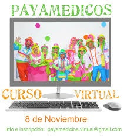

¡¡Bienvenidos a la PaYaWeb!!
PayaMêdicos en Acciòn
Te mostramos un poco de lo que hacemos nosotros, los PayaMêdicos, mirá este video payapandemico
En el año 2020, atravesamos una pandemia debido al Virus Covid-19, también conocido como "Coranavirus", y se nos complico abordar con normalidad nuestro rol, por eso, se nos ocurrio esta brillante idea y creamos esta canción para que todos pudieran lavarse las manos de una manera correcta pero también divertida, y de esta forma continuar haciendo nuestro aporte, pero esta vez y a través de la web, pudiendo llegar no solo a los hospitales, si no a toda la sociedad.
¿Sabías que tenemos cursos virtuales?
Estas solo a un click de ser parte. Súmate, aprendendiendo a dar tu sonrisas vas a recibir muchas más.
Podes inscribirte al curso virtual haciendo click qui abajo
Te contamos como comenzo todo...
La Asociación Civil Payamédicos es una organización no gubernamental fundada en el 2002 por el médico psiquiatra Jose Pellucchi. Es una técnica terapéutica que se desarrolla dentro de dispositivos varios utilizando la técnica del payaso teatral desde la mirada de payamédicos, y poseen conocimientos de payamedicina. En Argentina es una organización no gubernamental (ONG) dedicada a, entre otros objetivos, la «desdramatización del medio hospitalario».Está formada por más de 7000 personas que, como payamédicos, desarrollan su labor en hospitales de la Ciudad de Buenos Aires, La Plata, Bahía Blanca, Neuquén, Salta, San Luis, Bariloche, Entre Ríos, Misiones, Puerto Madryn, Córdoba, Mendoza, Rosario y casi todas las provincias de Argentina, con presencia en muchas poblaciones lejanas de los centros urbanos, en más de 240 dispositivos, de manera ad honorem.
La asociación civil se creó en el año 2002 por el médico psiquiatra José Pellucchi, del servicio de Terapia Intensiva del Hospital de Gastroenterología "Dr. Carlos Bonorino Udaondo y la Licenciada en Psicología Andrea Romero (enlace roto disponible en Internet Archive; véase el historial, la primera versión y la última)., del servicio de Psicopatología Infanto-Juvenil del Hospital de Clínicas quienes ya llevaban un tiempo empleando la técnica de payaso para ayudar a sus pacientes internados.2 Poco después, invitaron al médico estadounidense Valentín Curutchet, pionero entre los médicos-payasos a visitar unos centros del país.En 2007, organizaron en Buenos Aires el Primer Congreso Internacional de Clowns y Payasos de Hospital
La asociación ofrece una formación de payamédico durante un año, compuesta por la parte teatral o PAYATEATRALIDAD, donde se aprende la técnica del payaso teatral; y una parte teórica de la formación, denominada PAYAMEDICINA abordando temas como la psicología, infectología, neurociencias, tanatología, filosofía, juego, patologías, ética, bioseguridad, etc.